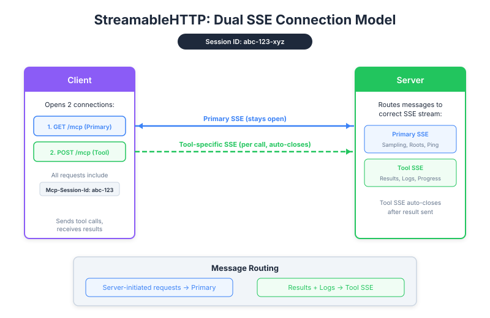

| Item | Detail |
|---|---|
| Exam Domain | D2 — Tool Design & MCP Integration (18%) |
| Task Statements | 2.1 (MCP transport selection), 2.4 (remote server configuration), 2.5 (SSE streaming patterns) |
| Source | model-context-protocol-advanced-topics / 03-transports / Lesson 13 |
SSE is like giving the server a walkie-talkie back to the client — a workaround that partially restores the "server can talk first" capability that HTTP normally blocks.

Recall the reception desk from Lesson 12:
- HTTP = receptionist stuck at the desk, can only respond to visitors
- SSE = the receptionist gets a walkie-talkie. Visitors leave a radio channel open, and the receptionist can push updates whenever needed
But there's a twist: the server gets two walkie-talkie channels, not one.
General Broadcast (always on)
├── "I need approval for this action"
├── "What workspace files do you have?"
└── (stays open...)
Task Channel #1 (tool call A)
├── "Processing... 25%"
├── "Processing... 75%"
├── "Here's the result"
└── (auto-closes)
Task Channel #2 (tool call B)
├── "Starting analysis..."
├── "Complete - here's your report"
└── (auto-closes)
💡 Key Insight
This dual-channel design is why a remote MCP server can show progress bars for individual tasks AND handle approval requests simultaneously. Without SSE, neither would be possible over HTTP.
| Feature | Requires Which Channel | Works With SSE? |
|---|---|---|
| Progress bars for tool calls | Tool SSE | Yes |
| Real-time log streaming | Tool SSE | Yes |
| Server-initiated approval flows | Primary SSE | Yes |
| Server-side AI reasoning (sampling) | Primary SSE | Yes |
| Basic tool call + response | Neither (plain HTTP) | Always works |
SSE requires:
1. A session ID system (server must track clients)
2. A persistent GET connection (client keeps a channel open)
3. Proper message routing (server sends the right message to the right channel)
This is more infrastructure complexity than basic HTTP.
| Flag | What Dies | Product Impact |
|---|---|---|
stateless_http=true |
Primary SSE channel (no sessions) | No approval flows, no sampling — server becomes "ask-only" |
json_response=true |
All SSE channels (no streaming) | No progress bars, no real-time logs — users just wait for final result |
| Both enabled | Everything SSE-related | Back to basic HTTP: ask question, get answer. That's it. |
| If Your Product Needs... | SSE Required? | Complexity Cost |
|---|---|---|
| Progress indicators for long operations | Yes | Moderate — need session management |
| Server-initiated human approval | Yes | Moderate — need primary SSE channel |
| Simple tool calls with immediate results | No | Keep it simple, skip SSE |
| Real-time streaming of results | Yes | Moderate — tool SSE channels |
| Maximum scalability | No — SSE makes scaling harder | Consider stateless mode |
stateless_http kills primary SSE. json_response kills all SSE. Both = no SSE at all.| Front | Back |
|---|---|
| What is SSE in the context of MCP? | A workaround that gives the server a persistent channel to push messages to the client over HTTP |
| What are the two SSE channel types? | Primary SSE (general, persistent, server-initiated messages) and Tool SSE (per-call, temporary, progress/results) |
| What business feature does Primary SSE enable? | Server-initiated approval flows and sampling — the server can ask the client for input |
| What business feature does Tool SSE enable? | Progress bars and real-time logs for individual tool calls |
| What is a session ID used for? | Linking the persistent GET SSE connection to POST requests from the same client |
| Which flag kills the Primary SSE channel? | stateless_http=true — no sessions means no persistent server→client channel |
| Which flag kills all SSE streaming? | json_response=true — returns only final JSON, no streaming at all |
| Is SSE a complete solution for server→client communication? | No — it is a partial workaround. Full bidirectional communication only exists in Stdio transport |